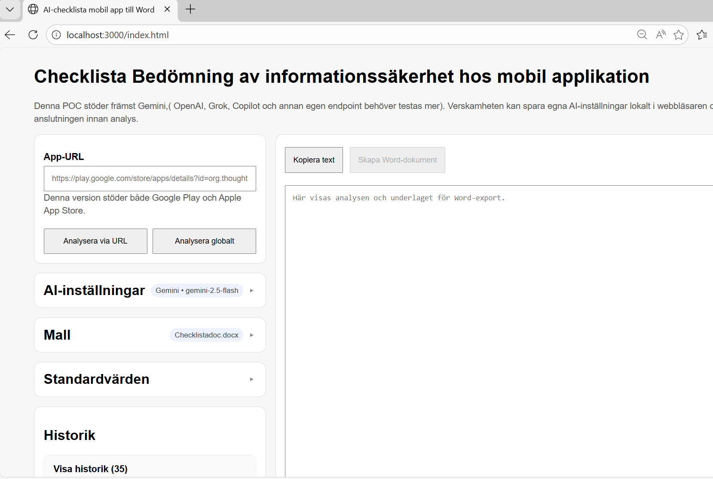

AI-checklista för informationssäkerhet – mobilapplikationer
Webb-tjänsten fungerar som ett stöd i verksamhetens informationssäkerhetsarbete genom att förenkla och standardisera bedömningen av mobilapplikationer. I normala fall genomförs denna typ av granskning manuellt, vilket ofta är både tidskrävande och resursintensivt. Genom att klistra in en länk till en app, välja en Word-mall och en AI-leverantör, kan användaren snabbt få fram en ifylld checklista som hjälper till att kvalitetssäkra appar innan de tas i bruk i verksamheten.
Skärmbilder från lösningen
Här visas ett urval av gränssnittet och resultatflödet – från inmatning och AI-inställningar till analyser, global sökning och export till Word-dokument.

Bildspelet kan bläddras med pilarna eller genom att klicka på miniatyrerna.
Vad gör appen?
AI:n analyserar appens butikssida, fyller i ett fördefinierat Word-dokument med svar på säkerhetsfrågor, och låter användaren ladda ner det färdiga dokumentet direkt. Resultatet är en ifylld checklista som kan användas som underlag i organisationens säkerhetsarbete.
Flöde steg för steg
- Användaren klistrar in en app-URL från Google Play.
- Servern hämtar butikssidan och extraherar appnamn, leverantör, beskrivning och appikon.
- AI:n anropas med en prompt byggd från mallens platshållare och eventuella standardvärden som användaren angett.
- AI-svaret tolkas som JSON och normaliseras mot mallens fält. Standardvärden som användaren definierat tar alltid prioritet över AI:ns svar.
- Analysen sparas i en lokal historikfil på servern (
data/history.json). - Användaren kan exportera resultatet till ett Word-dokument där alla
{{platshållare}}i mallen ersätts med de analyserade värdena.
Det finns även ett globalt söklarmsläge där servern kör ytterligare sökningar via DuckDuckGo om exempelvis integritetspolicy, säkerhetsbrister och datadelning, och lägger in resultaten i AI-prompten för ett mer underbyggt svar.
Teknik
Backend – Node.js med Express
Servern är skriven i Node.js och använder Express som webbramverk.
Den hanterar hämtning och parsning av butikssidor med inbyggd fetch, byggande av AI-prompts
utifrån mallens platshållare, anrop till AI-leverantörernas API:er, historikhantering via en lokal JSON-fil,
samt generering och nedladdning av Word-dokument.
Word-export – AdmZip och XML-manipulation
Word-dokument (.docx) är i grunden ZIP-arkiv med XML inuti. Appen använder AdmZip
för att öppna mallen, hitta platshållare av typen {{fältnamn}} i dokumentets XML, ersätta dem med
analyserade värden, och sedan spara det färdiga dokumentet.
En särskild utmaning är att Word ofta delar upp text i flera XML-element. Därför kan en platshållare vara uppdelad i flera fragmenterade XML-noder. Appen hanterar detta med ett reguljärt uttryck som tillåter godtyckliga XML-taggar mellan varje tecken i platshållarens namn.
AI-integration – flera leverantörer
Appen stöder flera AI-leverantörer:
| Leverantör | Protokoll | Standardmodell |
|---|---|---|
| Gemini (Google) | Eget REST-API | gemini-2.5-flash |
| OpenAI | OpenAI-kompatibelt | gpt-4.1-mini |
| Grok (xAI) | OpenAI-kompatibelt | grok-4-fast-reasoning |
| Copilot (Microsoft) | OpenAI-kompatibelt | gpt-4.1 |
| Annan/Custom | OpenAI-kompatibelt | valfri |
Alla OpenAI-kompatibla leverantörer använder samma anropsfunktion med konfigurerbar base URL och endpoint-path.
Global sökning – DuckDuckGo
I globalt läge körs upp till fyra sökningar mot DuckDuckGo via HTML-gränssnitt utan API-nyckel, med söktermer som appens integritetspolicy, säkerhetsproblem och datadelning. Resultaten fogas in i AI-prompten som kompletterande underlag.
Frontend – Vanilla HTML/CSS/JavaScript
Gränssnittet är byggt i ren HTML, CSS och JavaScript utan externa ramverk. Det använder localStorage
för att spara AI-inställningar lokalt i webbläsaren, collapsible panels för AI-inställningar, mall och standardvärden,
password-fält för API-nycklar och access tokens, samt realtidsvisning av analysresultat i ett skrivskyddat textfält.
Datalagring – lokal JSON-fil
All analyshistorik lagras i data/history.json direkt på serverns filsystem. Varje post innehåller
app-metadata, AI-inställningar, mallnamn, analysresultat och de standardvärden som användes.
Säkerhet och integritet
- API-nycklar sparas enbart lokalt i användarens webbläsare via localStorage och lagras aldrig på servern.
- Inmatade API-nycklar visas som maskerade punkter i gränssnittet.
- URL-validering på servern tillåter för närvarande endast Google Play-länkar.
- Exporterade Word-dokument sparas temporärt i mappen
exports/på servern och kan laddas ner via en direktlänk.